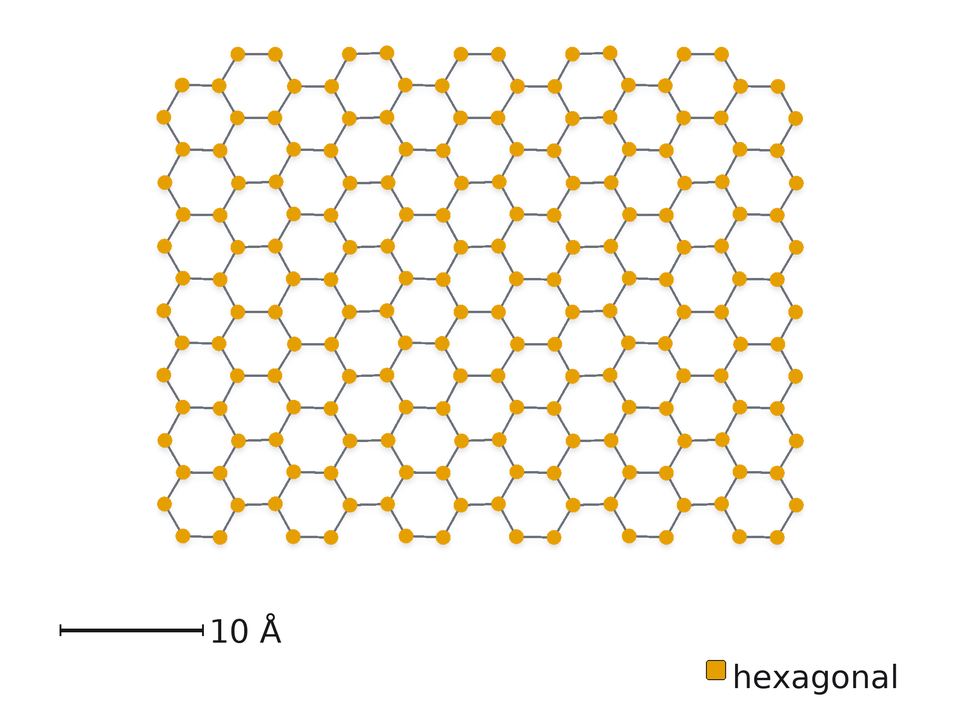

C++¶
include/seams.hpp is the header-only C++ API. It lives in namespace
seams, includes seams.h, and links libseams. Meson installs the
header next to seams.h. pkg-config --cflags seams and
find_package(seams) both put that directory on the include path.
SEAMS_CXX_HEADER in seams-config.cmake is the installed seams.hpp.
Quickstart¶
c++ -std=c++20 -Iinclude docs/examples/cpp_api.cpp -Lbuild/src -lseams -o cpp_api
./cpp_api "$PWD"
meson test docs_api_hpp compiles that program and runs it on this tree.
The eight-atom diamond is cubic. Ice Ih is hexagonal, 128 atoms, with mean
q6-bar 0.562448843702.
/* Copyright (c) d-SEAMS developers
* Idiomatic seams.hpp on the eight-atom diamond and on ice Ih.
*/
#include "seams.hpp"
#include <cmath>
#include <cstdio>
#include <string>
#include <vector>
namespace {
std::vector<double> diamond8(double &edge) {
const double a = 2.75 * 4.0 / std::sqrt(3.0);
const double fcc[4][3] = {{0, 0, 0}, {0.5, 0.5, 0}, {0.5, 0, 0.5}, {0, 0.5, 0.5}};
const double basis[2][3] = {{0, 0, 0}, {0.25, 0.25, 0.25}};
std::vector<double> xyz;
xyz.reserve(24);
for (const auto &shift : fcc) {
for (const auto &site : basis) {
xyz.push_back((shift[0] + site[0]) * a);
xyz.push_back((shift[1] + site[1]) * a);
xyz.push_back((shift[2] + site[2]) * a);
}
}
edge = a;
return xyz;
}
} // namespace
int main(int argc, char **argv) {
try {
seams::set_num_threads(1);
if (seams::num_threads() != 1 || seams::version().empty()) {
return 1;
}
double edge = 0;
const auto xyz = diamond8(edge);
seams::System cell;
cell.set_ortho(xyz, edge, edge, edge);
const auto cubic = cell.chill_plus(seams::ChillOptions{});
const auto orders = cell.q4q6(3.5);
double mean = 0;
for (double value : orders.q6) {
mean += value;
}
mean /= static_cast<double>(orders.q6.size());
if (cubic.counts[0] != 8 || !(mean > 0.3)) {
return 1;
}
std::printf("cpp api cubic %d q6 %.3f %s\n", cubic.counts[0], mean, seams::version().c_str());
if (argc < 2) {
return 0;
}
seams::System ice;
ice.read(std::string(argv[1]) + "/input/traj/ice1h.lammpstrj", 1, -1);
const auto labels = ice.chill_plus(seams::ChillOptions{});
const auto q6 = ice.q6bar(seams::Q6BarOptions{});
const auto shell = ice.symmetry(0.0);
int n_ih = 0;
for (int label : shell) {
n_ih += label == 0 ? 1 : 0;
}
std::vector<int> flags(static_cast<std::size_t>(ice.count()), 1);
const auto front = ice.brine(flags, seams::BrineOptions{});
const auto pockets = front.pockets();
std::printf("ice Ih atoms %d hexagonal %d q6bar %.12f shell_ih %d pockets %d\n", ice.count(),
labels.counts[static_cast<std::size_t>(static_cast<int>(seams::Label::Hexagonal))],
q6.mean, n_ih, pockets.pockets);
if (ice.count() != 128 || labels.counts[1] != 128) {
return 1;
}
if (std::abs(q6.mean - 0.562448843702) > 1e-9) {
return 1;
}
} catch (const seams::Error &err) {
std::fprintf(stderr, "seams::Error %d %s\n", err.code(), err.what());
return 1;
}
return 0;
}
The wider language ABI remains libseams_lang (seams_frame_*). A program
that only needs seams.hpp does not link it. docs/examples/minimal_cpp.cpp
is that ABI on the GenIce sI cell. meson test docs_examples runs it.
docs/examples/core_counts.cpp is the same census on Ice Ih and sII.
meson test docs_core_counts runs it.
// Copyright (c) d-SEAMS developers
/* Same Ice Ih and sII census as core_counts.c, through seams.h. */
#include "seams.h"
#include "seams_lammps_box.h"
#include <cstdio>
#include <cstdlib>
#include <cstring>
#include <vector>
static int read_dump(const char *path, std::vector<double> &xyz, std::vector<int> &types,
double box9[9]) {
FILE *in = std::fopen(path, "r");
char line[512];
int reading = 0;
if (in == nullptr) {
return 1;
}
while (std::fgets(line, sizeof line, in) != nullptr) {
if (std::strncmp(line, "ITEM: BOX BOUNDS", 16) == 0) {
double bound_lo[3], bound_hi[3], tilt[3];
for (int axis = 0; axis < 3; ++axis) {
char bound[128];
if (std::fgets(bound, sizeof bound, in) == nullptr) {
std::fclose(in);
return 1;
}
tilt[axis] = 0.0;
if (std::sscanf(bound, "%lf %lf %lf", &bound_lo[axis], &bound_hi[axis], &tilt[axis]) < 2) {
std::fclose(in);
return 1;
}
}
seams_lammps_bounds(bound_lo, bound_hi, tilt, box9);
} else if (std::strncmp(line, "ITEM: ATOMS", 11) == 0) {
reading = 1;
} else if (reading) {
int id, kind;
double x, y, z;
if (std::sscanf(line, "%d %d %lf %lf %lf", &id, &kind, &x, &y, &z) != 5) {
break;
}
types.push_back(kind);
xyz.push_back(x);
xyz.push_back(y);
xyz.push_back(z);
}
}
std::fclose(in);
return xyz.empty() ? 1 : 0;
}
static int classify(const char *path, int &n, int counts[9], int rings[13]) {
std::vector<double> xyz;
std::vector<int> types;
double box9[9] = {};
if (read_dump(path, xyz, types, box9) != 0) {
return 1;
}
n = static_cast<int>(types.size());
std::vector<int> labels(static_cast<size_t>(n));
seams_system *sys = seams_system_create();
seams_rings *found = nullptr;
if (sys == nullptr ||
seams_system_set_frame(sys, xyz.data(), n, box9, types.data(), nullptr) != SEAMS_OK ||
seams_chill_plus(sys, 3.5, 0, SEAMS_GRAPH_CUTOFF, SEAMS_CHILL_PUBLISHED, labels.data(),
counts) != SEAMS_OK ||
seams_rings_find(sys, 3.5, 0, SEAMS_GRAPH_CUTOFF, 6, &found) != SEAMS_OK ||
seams_rings_histogram(found, rings, 13) != SEAMS_OK) {
if (found != nullptr) {
seams_rings_destroy(found);
}
if (sys != nullptr) {
seams_system_destroy(sys);
}
return 1;
}
seams_rings_destroy(found);
seams_system_destroy(sys);
return 0;
}
int main() {
int n = 0;
int counts[9] = {};
int rings[13] = {};
if (seams_set_num_threads(1) != SEAMS_OK) {
return 1;
}
if (classify("input/traj/ice1h.lammpstrj", n, counts, rings) != 0 || n != 128 ||
counts[1] != 128 || rings[6] != 256) {
std::fprintf(stderr, "ice Ih n=%d hexagonal=%d rings6=%d\n", n, counts[1], rings[6]);
return 1;
}
if (classify("input/traj/genice_sII.lammpstrj", n, counts, rings) != 0 || n != 136 ||
counts[4] != 136 || rings[5] != 144 || rings[6] != 16) {
std::fprintf(stderr, "sII n=%d clathrate=%d rings5=%d rings6=%d\n", n, counts[4], rings[5],
rings[6]);
return 1;
}
std::printf("cpp hexagonal 128 rings6 256 clathrate 136 rings5 144\n");
return 0;
}
// Copyright (c) d-SEAMS developers
/* Read the GenIce sI cell through the C++ language header. */
#include "seams_lang.h"
#include <cstdio>
#include <cstdlib>
#include <vector>
int main(int argc, char **argv) {
const char *path = argc > 1 ? argv[1] : "input/traj/genice_sI.lammpstrj";
seams_frame *frame = seams_frame_read(path, 1, 0);
if (frame == nullptr || seams_frame_nop(frame) != 46) {
std::fprintf(stderr, "%s\n", seams_last_error());
return 1;
}
if (seams_frame_neighbours(frame, 3.5, 0, "cutoff") != 0) {
return 1;
}
if (seams_frame_neighbour_pairs(frame) < 150) {
return 1;
}
double q6[46];
if (seams_frame_steinhardt(frame, 3.5, 0, 6, q6, nullptr) != 0) {
return 1;
}
double mean = 0;
for (double value : q6) {
mean += value;
}
mean /= 46.0;
int labels[46];
int counts[9];
if (seams_frame_chill_plus(frame, 3.5, 0, "cutoff", labels, counts) != 0) {
return 1;
}
int rings[7] = {};
if (seams_frame_rings(frame, 3.5, 0, "cutoff", 6, rings, 7) != 0) {
return 1;
}
int n_five = 0;
int per_atom[46];
if (seams_frame_chordless(frame, 3.5, 0, "cutoff", 5, nullptr, 0, &n_five, per_atom) != 0) {
return 1;
}
int five[48 * 5];
if (n_five != 48 ||
seams_frame_chordless(frame, 3.5, 0, "cutoff", 5, five, 48 * 5, &n_five, nullptr) != 0) {
return 1;
}
int through = 0;
for (int n : per_atom) {
through += n;
}
if (through != 5 * 48 || five[0] != 0) {
return 1;
}
int n_cages = 0;
int n_sig_atoms = 0;
int n_vertices = 0;
if (seams_frame_signature(frame, 3.5, 0, "cutoff", "512", &n_cages, &n_sig_atoms) != 0) {
return 1;
}
int n_edge = 0;
int n_edge_atoms = 0;
if (seams_frame_signature_edge(frame, 3.5, 0, "cutoff", "512", "none", &n_edge,
&n_edge_atoms) != 0 ||
n_edge != n_cages) {
return 1;
}
int n_tight = 0;
int n_tight_atoms = 0;
if (seams_frame_signature_edge(frame, 3.5, 0, "cutoff", "512", "1,2", &n_tight,
&n_tight_atoms) != 0 ||
n_tight != 0) {
return 1;
}
if (n_cages > 0 &&
seams_frame_signature_vertices(frame, 3.5, 0, "cutoff", "512", 0, nullptr, 0,
&n_vertices) != 0) {
return 1;
}
if (n_cages > 0 &&
seams_frame_signature_vertices_edge(frame, 3.5, 0, "cutoff", "512", "none", 0, nullptr, 0,
&n_vertices) != 0) {
return 1;
}
// CHILL+ and rings from one neighbour list, with the phase times.
int fused[9] = {};
int fused_rings[7] = {};
seams_phase_times times{};
if (seams_frame_chill_rings(frame, 3.5, 0, "cutoff", 6, 0.0, labels, fused, fused_rings, 7,
×) != 0 ||
fused[4] != counts[4]) {
return 1;
}
int shell[46];
if (seams_frame_symmetry(frame, 0.12, shell) != 0) {
return 1;
}
if (seams_frame_rdf_nbins(6.0, 0) < 1) {
return 1;
}
const int n_r2 = seams_frame_rdf2d_nbin(3.5, 0.5);
std::vector<double> r2(static_cast<std::size_t>(n_r2));
std::vector<double> g2(static_cast<std::size_t>(n_r2));
if (seams_frame_rdf2d(frame, 3.5, 0.5, nullptr, r2.data(), g2.data()) != 0) {
return 1;
}
int sheet[8] = {};
if (seams_frame_monolayer(frame, 3.5, 0, 6, 1.0, nullptr, sheet, 8) != 0) {
return 1;
}
// The same positions as a new frame with one molecule per atom.
double box9[9];
seams_frame_box(frame, box9);
std::vector<int> types(46, 1);
std::vector<int> mols(46);
for (int i = 0; i < 46; ++i) {
mols[static_cast<std::size_t>(i)] = i + 1;
}
seams_frame *copy = seams_frame_from_species(seams_frame_positions(frame), 46, box9,
types.data(), nullptr, mols.data());
if (copy == nullptr) {
return 1;
}
double tau = 0.0;
const int jump = seams_frames_jump_tau90(frame, copy, 1.0, 1, 2, &tau);
seams_frame_free(copy);
if (jump != 0) {
return 1;
}
if (counts[4] != 46 || rings[5] != 48 || rings[6] != 54 || mean <= 0.5) {
return 1;
}
std::printf("%s atoms 46 clathrate %d q6 %.3f rings %d\n", seams_lang_version(), counts[4],
mean, rings[5] + rings[6]);
seams_frame_free(frame);
return 0;
}
docs/examples/ice.cpp is the eight-atom C call. meson test docs_api_cpp
runs it.
// Copyright (c) d-SEAMS developers
#include "seams.h"
#include <cmath>
#include <cstdio>
int main() {
const double a = 2.75 * 4.0 / std::sqrt(3.0);
const double fcc[4][3] = {{0, 0, 0}, {0.5, 0.5, 0}, {0.5, 0, 0.5}, {0, 0.5, 0.5}};
const double basis[2][3] = {{0, 0, 0}, {0.25, 0.25, 0.25}};
double xyz[24];
int n = 0;
for (int f = 0; f < 4; f++) {
for (int s = 0; s < 2; s++, n++) {
xyz[3 * n] = (fcc[f][0] + basis[s][0]) * a;
xyz[3 * n + 1] = (fcc[f][1] + basis[s][1]) * a;
xyz[3 * n + 2] = (fcc[f][2] + basis[s][2]) * a;
}
}
if (seams_set_num_threads(1) != SEAMS_OK || seams_get_num_threads() != 1) {
return 1;
}
int labels[8];
int counts[9];
double q4[8];
double q6[8];
seams_system *sys = seams_system_create();
if (seams_system_set_ortho(sys, xyz, 8, 0, 0, 0, a, a, a, nullptr, nullptr) != SEAMS_OK) {
return 1;
}
if (seams_chill_plus(sys, 3.5, 0, SEAMS_GRAPH_CUTOFF, SEAMS_CHILL_PUBLISHED, labels, counts) !=
SEAMS_OK) {
return 1;
}
if (seams_q4q6(sys, 3.5, 0, q4, q6) != SEAMS_OK) {
return 1;
}
double mean = 0;
for (double value : q6) {
mean += value;
}
mean /= 8.0;
std::printf("%s cubic %d q6 %.3f\n", seams_version_string(), counts[0], mean);
seams_system_destroy(sys);
return counts[0] == 8 && mean > 0.3 ? 0 : 1;
}
Concepts¶
System, Neighbours, Rings, Cages, Fingerprint, and Brine are
move-only. The destructor frees the C handle. Copying is deleted.
A status other than success throws seams::Error. what() is
seams_handle_error. code() is the status integer. status() is the
Status enumerator.
Coordinates enter as std::span<const double>. Paths and site-table text
enter as std::string_view. Results come back as values, std::vector,
std::array, or std::string. Neighbours::pairs returns the directed
pairs. Rings is a range: begin and end walk the rings.
Graph, ChillRule, Label, CageLabel, SiteKind, RingSymmetry,
Axis, and DomainSubset are enum class. Analyses with several knobs
take an options aggregate. ChillOptions, SteinhardtOptions,
CageOptions, DistributionOptions, BondOptions, and the rest default
to the published cutoff of 3.5 angstroms.
Methods that return a value are [[nodiscard]]. A method that reads a
frame takes a non-const System because the C call clears the handle
error. count is const.
A handle requires exclusive use. Two frames on two threads may run
steinhardt, ql, q4q6, or q6bar at the same time; the Steinhardt
scratch inside the library belongs to the calling thread. set_num_threads
is process-global.
Doxygen comments on seams.hpp and seams.h feed the same doxyrest tree
as the engine headers (Doxyfile_seams.cfg, the rgpot layout). The
generated pages are api/index.
Ice Ih¶
input/traj/ice1h.lammpstrj, frame 1, every atom, cutoff 3.5 angstrom, one
thread. tests/test_seams_hpp.cpp (meson test seams_hpp_match) requires
these numbers to match the C++ engine.
ih n 128
ih chill0 0 128 0 0 0 0 0 0 0
ih q3 0.744029547233
ih q4 0.509334928671
ih q6 0.625855471508
ih q6bar 0.562448843702
ih q8 0.229702115021
ih q12 0.421988011385
ih vert 6 0
ih cages 128 0 0 0
ih knn 512
ih rdf 8 4158.664606579 0
ih rcn 26.204724409449
ih cn 4.031496062992
ih hbond 0
ih rho 4 0.030779111111
ih fp 16 256
ih site 8
ih pairs 0 128 0
ih domain 0 0 0
ih prism 0
ih sheet 256
chill0 is the nine original CHILL populations in label order. q3 through
q12 are means. q6bar is the mean of the Lechner-Dellago average. vert is
the length of ring 0 and its first atom. cages is hexagonal, cubic,
water, both. knn is the mutual four-neighbour pair count. rdf is the
bin count, the volume in cubic angstroms, and g of the first bin. rcn is
the last running coordination. cn is the coordination to 3.5 angstroms.
fp is the fingerprint key length and the ring-census sum. site is atom
0 under 1=waterO. pairs is contacts, cations, and anions under
1=cationHead. domain is the apolar subset. prism is perfect
six-stacks. sheet is six-rings in the monolayer histogram.
sI has 46 atoms and 2 cages of signature 512 covering 40 atoms. The XYZ
file has 256 atoms and coordination 43.325490196078 out to 6 angstroms.
The CON file has 4 atoms and 0 hydrogen bonds. Triclinic sH has 136 atoms
and mean q6 0.625601998379.
symmetry writes one shell label per atom. brine measures a planar front
from an ice flag per atom. docs/examples/cpp_api.cpp prints:
ice Ih atoms 128 hexagonal 128 q6bar 0.562448843702 shell_ih 128 pockets 0
The test rejects any other hexagonal count or q6-bar mean.
Errors and ownership¶
try {
seams::System system;
system.read("missing.lammpstrj", 1, -1);
} catch (const seams::Error &err) {
// err.what() is seams_handle_error. err.code() is the status.
}
System and the result handles are move-only. A move leaves the source
empty. The destructor of an empty handle does nothing. The caller does not
call seams_*_destroy.
bindings/cxx/test_lang.cpp is the seams_lang fixture. It is a separate
ABI from seams.hpp.
}
LiveFn fault_live() {
return reinterpret_cast<LiveFn>(process_symbol("seams_test_live"));
}
LiveFn fault_peak() {
return reinterpret_cast<LiveFn>(process_symbol("seams_test_peak"));
}
ResetFn fault_reset() {
int count_of(const int counts[9], int label) { return counts[label]; }
} // namespace
int main(int argc, char **argv) {
const std::string root = argc > 1 ? argv[1] : ".";
const std::string tip4p = root + "/input/traj/exampleTraj.lammpstrj";
const std::string cubic = root + "/input/traj/mW_cubic.lammpstrj";
const std::string si = root + "/input/traj/genice_sI.lammpstrj";
if (std::string(seams_lang_version()).empty()) {
return fail("empty version");
}
seams_frame *tip = seams_frame_read(tip4p.c_str(), 1, 2);
if (tip == nullptr) {
return fail("read tip4p");
}
if (seams_frame_nop(tip) != 250) {
return fail("tip4p nop");
}
const double *xyz = seams_frame_positions(tip);
for (int i = 0; i < 9; ++i) {
if (default_counts[i] != counts[i]) {
return fail("chill+ default is not the cutoff list");
}
}
if (seams_frame_chill_plus(tip, 3.5, 2, "knn-union", labels.data(),
counts) == 0) {
return fail("chill+ accepted knn-union");
}
int n_hex = -1, n_cubic = -1, n_water = -1, n_both = -1;
if (seams_frame_cages(tip, 3.5, 2, 4, "seeded", 0, nullptr, &n_hex, &n_cubic,
&n_water, &n_both) != 0) {
// Orthorhombic frames take the cutoff shell. 0.389362 is the
// four-nearest mean of the same oxygens.
if (std::abs(mean - 0.374897) > 1e-4) {
std::cerr << "q3 mean " << mean << "\n";
return fail("q3");
}
const int bins = 4;
std::vector<double> r(bins), g(bins);
std::vector<int> hist(bins);
double volume = 0.0;
if (seams_frame_rdf(tip, 6.0, bins, 2, 2, r.data(), g.data(), hist.data(),
&volume) != 0) {
return fail("rdf");
}
if (hist[1] != 390 || hist[2] != 705 || hist[3] != 531) {
std::cerr << "rdf counts " << hist[0] << " " << hist[1] << " " << hist[2]
<< " " << hist[3] << "\n";
return fail("rdf counts");
return fail("mW cubic count");
}
if (seams_frame_cages(ice, 3.5, 1, 4, "seeded", 0, nullptr, &n_hex, &n_cubic,
&n_water, &n_both) != 0) {
return fail("mW cages");
}
if (n_hex != 0 || n_cubic != 4096 || n_water != 0) {
std::cerr << "mW cages " << n_hex << " " << n_cubic << " " << n_water
<< "\n";
return fail("mW cage counts");
}
if (seams_path_nframes(cubic.c_str()) < 2) {
return fail("mW nframes");
}
seams_frame *guest = seams_frame_read(si.c_str(), 1, 1);
if (guest == nullptr) {
return fail("sI");
}
int n_cages = 0;
int n_atoms = 0;
if (seams_frame_signature(guest, 3.5, 1, "cutoff", "512", &n_cages,
&n_atoms) != 0) {
return fail("sI signature");
}
const int rc = pclose(pipe);
#endif
if (rc != 0) {
std::cerr << line;
return fail("cli cages");
}
int cliNop = 0, cliHex = 0, cliCub = 0, cliBoth = 0, cliWat = 0;
std::istringstream in(line);
std::string tok;
in >> tok >> cliNop >> tok >> tok >> tok >> cliHex >> tok >> cliCub >>
tok >> cliBoth >> tok >> cliWat;
if (cliHex != hHex || cliCub != hCub || cliBoth != hBoth ||
cliWat != hWat) {
std::cerr << "cli " << line << "abi " << hHex << " " << hCub << " "
<< hBoth << " " << hWat << "\n";
return fail("abi disagrees with the cli");
}
}
double box9[9] = {};
seams_frame_box(tip, box9);
if (!(box9[3] > 0.0)) {
return fail("box");
}
if (seams_frame_index(tip) < 1) {
return fail("index");
}
if (seams_frame_types(tip) == nullptr || seams_frame_ids(tip) == nullptr) {
return fail("arrays");
}
if (seams_frame_positions(nullptr) != nullptr) {
return fail("null positions");
}
if (seams_frame_chill(tip, 3.5, 2, "cutoff", labels.data(), counts) != 0) {
return fail("plain chill");
}
if (seams_frame_chill_plus_rule(tip, 3.5, 2, "cutoff", "ovito-chill+", labels.data(), counts) != 0) {
return fail("ovito rule");
}
if (seams_frame_chill_plus_rule(tip, 3.5, 2, "cutoff", "not-a-rule", labels.data(), counts) == 0) {
return fail("bad rule accepted");
}
if (seams_frame_from_arrays(nullptr, 1, box9, nullptr, nullptr) != nullptr) {
return fail("null xyz");
}
seams_frame *built = seams_frame_from_arrays(xyz, 4, box9, nullptr, nullptr);
if (built == nullptr || seams_frame_nop(built) != 4) {
return fail("from arrays");
}
seams_frame_free(built);
if (seams_frame_prisms(nullptr, 3.5, 2, 6, nullptr, nullptr, nullptr) == 0) {
return fail("null prisms");
}
int n_rows = 0;
if (seams_frame_prisms(tip, 3.5, 2, 6, nullptr, nullptr, &n_rows) != 0 ||
n_rows != 4) return fail("prism count");
std::vector<seams_prism_row> prism_rows(static_cast<std::size_t>(n_rows));
if (seams_frame_prisms(tip, 3.5, 2, 6, nullptr, prism_rows.data(), &n_rows) != 0) {
return fail("prisms");
}
const int nbin = seams_frame_rdf2d_nbin(3.5, 0.0);
std::vector<double> r2(static_cast<std::size_t>(nbin));
std::vector<double> g2(static_cast<std::size_t>(nbin));
if (seams_frame_rdf2d(nullptr, 3.5, 0.5, nullptr, r2.data(), g2.data()) == 0) {
return fail("null rdf2d");
}
if (seams_frame_rdf2d(tip, 3.5, 0.5, nullptr, r2.data(), g2.data()) != 0) {
return fail("rdf2d");
}
int sheet[8] = {};
if (seams_frame_monolayer(tip, 3.5, 2, 6, 1.0, nullptr, sheet, 8) != 0) {
}
seams_frame_box(nullptr, box9);
if (seams_frame_types(nullptr) != nullptr) {
return fail("null types");
}
return fail("k zero");
}
setenv("SEAMS_OFFLOAD", "1", 1);
if (seams_frame_cages(tip, 3.5, 2, 4, "mutual", 0, nullptr, &cageHex, &cageHex, &cageHex, &cageHex) != 0) {
return fail("offload cages");
}
unsetenv("SEAMS_OFFLOAD");
if (seams_frame_steinhardt(nullptr, 3.5, 2, 4, ql.data(), qlbar.data()) == 0) {
if (seams_frame_rdf_nbins(6.0, 0) < 1) {
}
if (seams_frame_prisms(oxygen, 3.5, 1, 4, "", prismWide.data(), &prismCount) != 0) {
return fail("prism blank dir");
}
seams_frame_free(pair);
seams_frame_free(blank2);
seams_frame_free(oxygen);
std::filesystem::remove_all(out);
seams_frame_free(molten);
seams_frame_free(tip);
seams_frame_free(ice);
seams_frame_free(guest);
{
const double brineXyz[] = {10, 10, 10, 12.8, 10, 10, 9.07, 12.42, 10,
9.07, 8.79, 11.62, 9.07, 8.79, 8.38, 12.0, 10, 10};
const double brineBox[] = {0, 0, 0, 30, 30, 30, 0, 0, 0};
const int types[] = {1, 1, 1, 1, 1, 3};
const int mols[] = {1, 2, 3, 4, 5, 6};
seams_frame *mixed =
seams_frame_from_species(brineXyz, 6, brineBox, types, nullptr, mols);
if (mixed == nullptr) {
return fail("brine frame");
if (hex + cubicCages + water + both != 5) {
seams_frame_free(mixed);
return fail("brine cages counted the ion");
}
if (seams_frame_select(mixed, 9, nullptr, 0) == 0) {
seams_frame_free(mixed);
return fail("brine missing type was accepted");
}
if (std::string(seams_last_error()) != "atom type 9 is not in the frame") {
seams_frame_free(mixed);
return fail("brine missing type text");
}
const int absentMol = 99;
if (seams_frame_select(mixed, 1, &absentMol, 1) == 0) {
seams_frame_free(mixed);
return fail("brine missing molecule was accepted");
}
seams_frame_free(mixed);
}
{
seams_frame *fresh = seams_frame_read(tip4p.c_str(), 1, 2);
if (fresh == nullptr) {
return fail("reread tip4p");
}
const int nFresh = seams_frame_nop(fresh);
std::vector<double> moved(static_cast<std::size_t>(nFresh) * 3);
const double *src = seams_frame_positions(fresh);
for (int i = 0; i < nFresh * 3; ++i) {
moved[static_cast<std::size_t>(i)] = src[i];
}
moved[0] += 1.0e-4;
double freshBox[9];
seams_frame_box(fresh, freshBox);
if (seams_frame_set_positions(fresh, moved.data(), nFresh, freshBox) != 0) {
seams_frame_free(fresh);
return fail("set positions");
}
if (seams_frame_neighbours(fresh, 3.5, 2, "cutoff") != 0) {
seams_frame_free(fresh);
return fail("neighbours");
}
if (seams_frame_neighbour_pairs(fresh) <= 0) {
seams_frame_free(fresh);
return fail("neighbour pairs");
}
std::vector<double> freshQl(static_cast<std::size_t>(nFresh));
std::vector<double> bar(static_cast<std::size_t>(nFresh));
if (seams_frame_steinhardt(fresh, 3.5, 2, 6, freshQl.data(), bar.data()) != 0) {
seams_frame_free(fresh);
return fail("steinhardt");
}
if (seams_frame_steinhardt_graph(fresh, 3.5, 2, 6, "cutoff", freshQl.data(), bar.data()) != 0) {
seams_frame_free(fresh);
return fail("steinhardt graph");
}
std::vector<double> wl(static_cast<std::size_t>(nFresh));
if (seams_frame_wl(fresh, 3.5, 2, 4, wl.data()) != 0) {
seams_frame_free(fresh);
return fail("wl");
}
std::vector<double> q4(static_cast<std::size_t>(nFresh));
std::vector<double> q6(static_cast<std::size_t>(nFresh));
if (seams_frame_q4_q6(fresh, 3.5, 2, q4.data(), q6.data(), nullptr, nullptr) != 0) {
seams_frame_free(fresh);
return fail("q4 q6");
}
std::vector<int> iceLabels(static_cast<std::size_t>(nFresh));
int fused[9] = {};
if (seams_frame_q4_q6_chill(fresh, 3.5, 2, q4.data(), q6.data(), nullptr, nullptr,
iceLabels.data(), fused) != 0) {
seams_frame_free(fresh);
return fail("q4 q6 chill");
}
std::vector<int> ringCounts(9);
seams_phase_times times{};
if (seams_frame_chill_rings(fresh, 3.5, 2, "cutoff", 6, 0.0, iceLabels.data(), fused,
ringCounts.data(), 9, ×) != 0) {
seams_frame_free(fresh);
return fail("chill rings");
}
std::vector<int> shell(static_cast<std::size_t>(nFresh));
if (seams_frame_symmetry(fresh, 0.12, shell.data()) != 0) {
seams_frame_free(fresh);
return fail("symmetry");
}
double tau = 0.0;
if (seams_frames_jump_tau90(fresh, fresh, 1.0, 2, 1, &tau) != 0) {
seams_frame_free(fresh);
Symbol reference¶
seams_frame¶
Purpose: Opaque frame used by the language bindings.
Parameters: none
Returns: The type itself.
Ownership: No allocation. This is a type.
Errors: None.
Units: handle
Example: docs/examples/minimal_cpp.cpp
seams_frame_box¶
Purpose: Copy the nine LAMMPS cell numbers.
Parameters: frame; box9
Returns: Zero on success. A non-zero value is the seams_status code.
Ownership: The caller owns every buffer it passed. The frame stays with its owner.
Errors: A non-zero code. seams_last_error() holds the detail.
Units: lengths in angstrom
Example: docs/examples/minimal_cpp.cpp
seams_frame_cages¶
Purpose: Score hexagonal and double-diamond cage membership.
Parameters: frame; cutoff; type; k; graph; complete; per_atom; n_hex; n_cubic; n_water; n_both
Returns: Zero on success. A non-zero value is the seams_status code.
Ownership: The caller owns every buffer it passed. The frame stays with its owner.
Errors: A non-zero code. seams_last_error() holds the detail.
Units: cutoff in angstrom; coordinates in angstrom; k is a dimensionless neighbour count
Example: docs/examples/minimal_cpp.cpp
seams_frame_chill¶
Purpose: Write one original CHILL label per atom.
Parameters: frame; cutoff; type; graph; labels; counts9
Returns: Zero on success. A non-zero value is the seams_status code.
Ownership: The caller owns every buffer it passed. The frame stays with its owner.
Errors: A non-zero code. seams_last_error() holds the detail.
Units: cutoff in angstrom; coordinates in angstrom
Example: docs/examples/minimal_cpp.cpp
seams_frame_chill_plus¶
Purpose: Write one CHILL+ label per atom.
Parameters: frame; cutoff; type; graph; labels; counts9
Returns: Zero on success. A non-zero value is the seams_status code.
Ownership: The caller owns every buffer it passed. The frame stays with its owner.
Errors: A non-zero code. seams_last_error() holds the detail.
Units: cutoff in angstrom; coordinates in angstrom
Example: docs/examples/minimal_cpp.cpp
seams_frame_chill_plus_rule¶
Purpose: Write CHILL+ labels for a named rule.
Parameters: frame; cutoff; type; graph; rule; labels; counts9
Returns: Zero on success. A non-zero value is the seams_status code.
Ownership: The caller owns every buffer it passed. The frame stays with its owner.
Errors: A non-zero code. seams_last_error() holds the detail.
Units: cutoff in angstrom; coordinates in angstrom; rule is text
Example: docs/examples/minimal_cpp.cpp
seams_frame_chill_rings¶
Purpose: Run CHILL+ and primitive rings on one neighbour list.
Parameters: frame; cutoff; type; graph; max_ring; skin; labels; counts9; ring_counts; ring_counts_len; times
Returns: Zero on success. A non-zero value is the seams_status code.
Ownership: The caller owns every buffer it passed. The frame stays with its owner.
Errors: A non-zero code. seams_last_error() holds the detail.
Units: cutoff in angstrom; coordinates in angstrom; skin in angstrom; phase times in seconds
Example: docs/examples/minimal_cpp.cpp
seams_frame_chordless¶
Purpose: Chordless cycles of one size on a frame.
Parameters: frame; cutoff; type; graph; size; rings; rings_len; n_rings; per_atom
Returns: Zero on success. A non-zero value is the seams_status code.
Ownership: The caller owns every buffer it passed. The frame stays with its owner.
Errors: A non-zero code. seams_last_error() holds the detail.
Units: cutoff in angstrom; size and indices are dimensionless, indices 0-based
Example: docs/examples/minimal_cpp.cpp
seams_frame_free¶
Purpose: Free a language-binding frame.
Parameters: frame
Returns: Nothing.
Ownership: Frees the caller-owned frame. A null pointer is a no-op.
Errors: None.
Units: handle
Example: docs/examples/minimal_cpp.cpp
seams_frame_from_arrays¶
Purpose: Build a frame from coordinates and a cell.
Parameters: xyz; n; box9; types; ids
Returns: A new seams_frame, or NULL when the call cannot build one.
Ownership: The caller owns the frame and frees it with seams_frame_free.
Errors: NULL. seams_last_error() names the reason.
Units: coordinates and box lengths in angstrom
Example: docs/examples/minimal_cpp.cpp
seams_frame_from_species¶
Purpose: Build a frame and keep molecule ids.
Parameters: xyz; n; box9; types; ids; mols
Returns: A new seams_frame, or NULL when the call cannot build one.
Ownership: The caller owns the frame and frees it with seams_frame_free.
Errors: NULL. seams_last_error() names the reason.
Units: coordinates and box lengths in angstrom
Example: docs/examples/minimal_cpp.cpp
seams_frame_ids¶
Purpose: Pointer to the atom ids stored on the frame.
Parameters: frame
Returns: A pointer into the frame.
Ownership: The frame owns the memory. It stays valid until seams_frame_free or a call that replaces the coordinates.
Errors: NULL when the frame is null.
Units: dimensionless ids
Example: docs/examples/minimal_cpp.cpp
seams_frame_index¶
Purpose: Return the frame index that was read.
Parameters: frame
Returns: Zero on success. A non-zero value is the seams_status code.
Ownership: The caller owns every buffer it passed. The frame stays with its owner.
Errors: A non-zero code. seams_last_error() holds the detail.
Units: dimensionless index, 1-based in the file
Example: docs/examples/minimal_cpp.cpp
seams_frame_monolayer¶
Purpose: Count rings in sheets of a given area.
Parameters: frame; cutoff; type; max_depth; sheet_area; output_dir; counts; counts_len
Returns: Zero on success. A non-zero value is the seams_status code.
Ownership: The caller owns every buffer it passed. The frame stays with its owner.
Errors: A non-zero code. seams_last_error() holds the detail.
Units: cutoff in angstrom; coordinates in angstrom; sheet_area in square angstrom
Example: docs/examples/minimal_cpp.cpp
seams_frame_neighbour_pairs¶
Purpose: Return the number of directed neighbour pairs.
Parameters: frame
Returns: Zero on success. A non-zero value is the seams_status code.
Ownership: The caller owns every buffer it passed. The frame stays with its owner.
Errors: A non-zero code. seams_last_error() holds the detail.
Units: dimensionless count
Example: docs/examples/minimal_cpp.cpp
seams_frame_neighbours¶
Purpose: Build the neighbour list and discard the rows.
Parameters: frame; cutoff; type; graph
Returns: Zero on success. A non-zero value is the seams_status code.
Ownership: The caller owns every buffer it passed. The frame stays with its owner.
Errors: A non-zero code. seams_last_error() holds the detail.
Units: cutoff in angstrom; coordinates in angstrom
Example: docs/examples/minimal_cpp.cpp
seams_frame_nop¶
Purpose: Return the number of atoms in the frame.
Parameters: frame
Returns: Zero on success. A non-zero value is the seams_status code.
Ownership: The caller owns every buffer it passed. The frame stays with its owner.
Errors: A non-zero code. seams_last_error() holds the detail.
Units: dimensionless count
Example: docs/examples/minimal_cpp.cpp
seams_frame_positions¶
Purpose: Pointer to the coordinates stored on the frame.
Parameters: frame
Returns: A pointer into the frame.
Ownership: The frame owns the memory. It stays valid until seams_frame_free or a call that replaces the coordinates.
Errors: NULL when the frame is null.
Units: angstrom
Example: docs/examples/minimal_cpp.cpp
seams_frame_prisms¶
Purpose: Count perfect and imperfect prism stacks.
Parameters: frame; cutoff; type; max_depth; output_dir; rows; n_rows
Returns: Zero on success. A non-zero value is the seams_status code.
Ownership: The caller owns every buffer it passed. The frame stays with its owner.
Errors: A non-zero code. seams_last_error() holds the detail.
Units: cutoff in angstrom; coordinates in angstrom
Example: docs/examples/minimal_cpp.cpp
seams_frame_q4_q6¶
Purpose: Write local and averaged q4 and q6.
Parameters: frame; cutoff; type; q4; q6; q4bar; q6bar
Returns: Zero on success. A non-zero value is the seams_status code.
Ownership: The caller owns every buffer it passed. The frame stays with its owner.
Errors: A non-zero code. seams_last_error() holds the detail.
Units: cutoff in angstrom; coordinates in angstrom; order parameters are dimensionless
Example: docs/examples/minimal_cpp.cpp
seams_frame_q4_q6_chill¶
Purpose: Write q4, q6, and CHILL+ from one cutoff list.
Parameters: frame; cutoff; type; q4; q6; q4bar; q6bar; labels; counts9
Returns: Zero on success. A non-zero value is the seams_status code.
Ownership: The caller owns every buffer it passed. The frame stays with its owner.
Errors: A non-zero code. seams_last_error() holds the detail.
Units: cutoff in angstrom; coordinates in angstrom; order parameters are dimensionless
Example: docs/examples/minimal_cpp.cpp
seams_frame_rdf¶
Purpose: Radial distribution of one type pair.
Parameters: frame; rmax; nbins; type_i; type_j; r; g; count; volume
Returns: Zero on success. A non-zero value is the seams_status code.
Ownership: The caller owns every buffer it passed. The frame stays with its owner.
Errors: A non-zero code. seams_last_error() holds the detail.
Units: rmax and r in angstrom; g is dimensionless; volume in cubic angstrom
Example: docs/examples/minimal_cpp.cpp
seams_frame_rdf2d¶
Purpose: Two-dimensional radial distribution in a monolayer.
Parameters: frame; cutoff; binwidth; output_dir; r; g
Returns: Zero on success. A non-zero value is the seams_status code.
Ownership: The caller owns every buffer it passed. The frame stays with its owner.
Errors: A non-zero code. seams_last_error() holds the detail.
Units: cutoff, binwidth, and r in angstrom; g is dimensionless
Example: docs/examples/minimal_cpp.cpp
seams_frame_rdf2d_nbin¶
Purpose: Number of bins in the monolayer RDF.
Parameters: cutoff; binwidth
Returns: Zero on success. A non-zero value is the seams_status code.
Ownership: The caller owns every buffer it passed. The frame stays with its owner.
Errors: A non-zero code. seams_last_error() holds the detail.
Units: cutoff and binwidth in angstrom; result is a dimensionless count
Example: docs/examples/minimal_cpp.cpp
seams_frame_rdf_nbins¶
Purpose: Number of bins in the bulk RDF.
Parameters: rmax; nbins
Returns: Zero on success. A non-zero value is the seams_status code.
Ownership: The caller owns every buffer it passed. The frame stays with its owner.
Errors: A non-zero code. seams_last_error() holds the detail.
Units: rmax in angstrom; nbins is a dimensionless count
Example: docs/examples/minimal_cpp.cpp
seams_frame_read¶
Purpose: Read one frame from a trajectory path.
Parameters: path; frame; type_filter
Returns: A new seams_frame, or NULL when the call cannot build one.
Ownership: The caller owns the frame and frees it with seams_frame_free.
Errors: NULL. seams_last_error() names the reason.
Units: frame index is dimensionless; coordinates in the file are angstrom
Example: docs/examples/minimal_cpp.cpp
seams_frame_rings¶
Purpose: Histogram of primitive rings.
Parameters: frame; cutoff; type; graph; max_depth; counts; counts_len
Returns: Zero on success. A non-zero value is the seams_status code.
Ownership: The caller owns every buffer it passed. The frame stays with its owner.
Errors: A non-zero code. seams_last_error() holds the detail.
Units: cutoff in angstrom; coordinates in angstrom; counts[k] is a dimensionless ring count
Example: docs/examples/minimal_cpp.cpp
seams_frame_select¶
Purpose: Keep selected oxygens for later classifiers.
Parameters: frame; type; mols; nmol
Returns: Zero on success. A non-zero value is the seams_status code.
Ownership: The caller owns every buffer it passed. The frame stays with its owner.
Errors: A non-zero code. seams_last_error() holds the detail.
Units: type and molecule ids are dimensionless
Example: docs/examples/minimal_cpp.cpp
seams_frame_set_positions¶
Purpose: Replace coordinates on an array-built frame.
Parameters: frame; xyz; n; box9
Returns: Zero on success. A non-zero value is the seams_status code.
Ownership: The caller owns every buffer it passed. The frame stays with its owner.
Errors: A non-zero code. seams_last_error() holds the detail.
Units: coordinates and box lengths in angstrom
Example: docs/examples/minimal_cpp.cpp
seams_frame_signature¶
Purpose: Count closed cages whose ring census matches a spec.
Parameters: frame; cutoff; type; graph; spec; n_cages; n_atoms
Returns: Zero on success. A non-zero value is the seams_status code.
Ownership: The caller owns every buffer it passed. The frame stays with its owner.
Errors: A non-zero code. seams_last_error() holds the detail.
Units: cutoff in angstrom; coordinates in angstrom; n_cages and n_atoms are dimensionless
Example: docs/examples/minimal_cpp.cpp
seams_frame_signature_edge¶
Purpose: Same cage census with an explicit face-edge window.
Parameters: frame; cutoff; type; graph; spec; edge; n_cages; n_atoms
Returns: Zero on success. A non-zero value is the seams_status code.
Ownership: The caller owns every buffer it passed. The frame stays with its owner.
Errors: A non-zero code. seams_last_error() holds the detail.
Units: cutoff in angstrom; coordinates in angstrom; edge lengths in angstrom
Example: docs/examples/minimal_cpp.cpp
seams_frame_signature_vertices¶
Purpose: Atom indices of one matched cage, sorted.
Parameters: frame; cutoff; type; graph; spec; cage_index; vertices; cap; n_vertices
Returns: Zero on success. A non-zero value is the seams_status code.
Ownership: The caller owns every buffer it passed. The frame stays with its owner. vertices may be null when the call only asks for the length.
Errors: A non-zero code. seams_last_error() holds the detail.
Units: cutoff in angstrom; cage_index, cap, and n_vertices are dimensionless
Example: docs/examples/minimal_cpp.cpp
seams_frame_signature_vertices_edge¶
Purpose: Atom indices of one matched cage on an explicit face-edge window.
Parameters: frame; cutoff; type; graph; spec; edge; cage_index; vertices; cap; n_vertices
Returns: Zero on success. A non-zero value is the seams_status code.
Ownership: The caller owns every buffer it passed. The frame stays with its owner. vertices may be null when the call only asks for the length. edge is read during the call.
Errors: A non-zero code. seams_last_error() holds the detail.
Units: cutoff and edge lengths in angstrom; cage_index, cap, and n_vertices are dimensionless
Example: docs/examples/minimal_cpp.cpp
seams_frame_steinhardt¶
Purpose: Local Steinhardt q_l on the cutoff shell.
Parameters: frame; cutoff; type; order_l; ql; qlbar
Returns: Zero on success. A non-zero value is the seams_status code.
Ownership: The caller owns every buffer it passed. The frame stays with its owner.
Errors: A non-zero code. seams_last_error() holds the detail.
Units: cutoff in angstrom; coordinates in angstrom; ql is dimensionless
Example: docs/examples/minimal_cpp.cpp
seams_frame_steinhardt_graph¶
Purpose: Local Steinhardt q_l on a named graph.
Parameters: frame; cutoff; type; order_l; graph; ql; qlbar
Returns: Zero on success. A non-zero value is the seams_status code.
Ownership: The caller owns every buffer it passed. The frame stays with its owner.
Errors: A non-zero code. seams_last_error() holds the detail.
Units: cutoff in angstrom; coordinates in angstrom; ql is dimensionless
Example: docs/examples/minimal_cpp.cpp
seams_frame_symmetry¶
Purpose: Per-atom shell label for Ih, Ic, or stacking disorder.
Parameters: frame; shell_rmsd; labels
Returns: Zero on success. A non-zero value is the seams_status code.
Ownership: The caller owns every buffer it passed. The frame stays with its owner.
Errors: A non-zero code. seams_last_error() holds the detail.
Units: shell_rmsd is a dimensionless residual; labels are dimensionless codes
Example: docs/examples/minimal_cpp.cpp
seams_frame_types¶
Purpose: Pointer to the atom types stored on the frame.
Parameters: frame
Returns: A pointer into the frame.
Ownership: The frame owns the memory. It stays valid until seams_frame_free or a call that replaces the coordinates.
Errors: NULL when the frame is null.
Units: dimensionless types
Example: docs/examples/minimal_cpp.cpp
seams_frame_wl¶
Purpose: Normalized Steinhardt w_l for degree 4 or 6.
Parameters: frame; cutoff; type; order_l; wl
Returns: Zero on success. A non-zero value is the seams_status code.
Ownership: The caller owns every buffer it passed. The frame stays with its owner.
Errors: A non-zero code. seams_last_error() holds the detail.
Units: cutoff in angstrom; coordinates in angstrom; wl is dimensionless
Example: docs/examples/minimal_cpp.cpp
seams_frames_jump_tau90¶
Purpose: Time for an H-H vector to rotate 90 degrees.
Parameters: first; second; dt; oxygen_type; hydrogen_type; tau
Returns: Zero on success. A non-zero value is the seams_status code.
Ownership: The caller owns every buffer it passed. The frame stays with its owner.
Errors: A non-zero code. seams_last_error() holds the detail.
Units: dt and tau in the caller’s time unit; types are dimensionless
Example: docs/examples/minimal_cpp.cpp
seams_lang_version¶
Purpose: Version string of the language-binding library.
Parameters: none
Returns: A pointer to library text.
Ownership: The library owns the string. The caller does not free it.
Errors: None.
Units: text
Example: docs/examples/minimal_cpp.cpp
seams_last_error¶
Purpose: Return the thread-local error detail.
Parameters: none
Returns: A pointer to library text.
Ownership: The library owns the string. The caller does not free it.
Errors: None.
Units: text
Example: docs/examples/minimal_cpp.cpp
seams_path_nframes¶
Purpose: Count frames in a trajectory path.
Parameters: path
Returns: Zero on success. A non-zero value is the seams_status code.
Ownership: The caller owns every buffer it passed. The frame stays with its owner.
Errors: A non-zero code. seams_last_error() holds the detail.
Units: dimensionless count
Example: docs/examples/minimal_cpp.cpp
seams_phase_times¶
Purpose: Seconds spent in neighbours, CHILL+, and rings.
Parameters: neighbours; chill; rings; reused
Returns: The type itself.
Ownership: No allocation. This is a type.
Errors: None.
Units: times in seconds; reused is 0 or 1
Example: docs/examples/minimal_cpp.cpp
seams_prism_row¶
Purpose: One row of a prism stack: size, perfect, imperfect.
Parameters: size; perfect; imperfect
Returns: The type itself.
Ownership: No allocation. This is a type.
Errors: None.
Units: dimensionless counts
Example: docs/examples/minimal_cpp.cpp
Structure still¶


Ice Ih colored by published CHILL+, drawn with chemparseplot. python docs/scripts/render_molecules.py --slug cpp writes the 2400 by 1800 PNG.¶